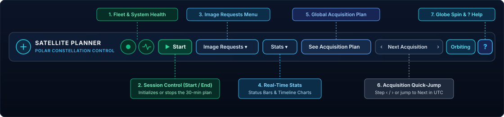
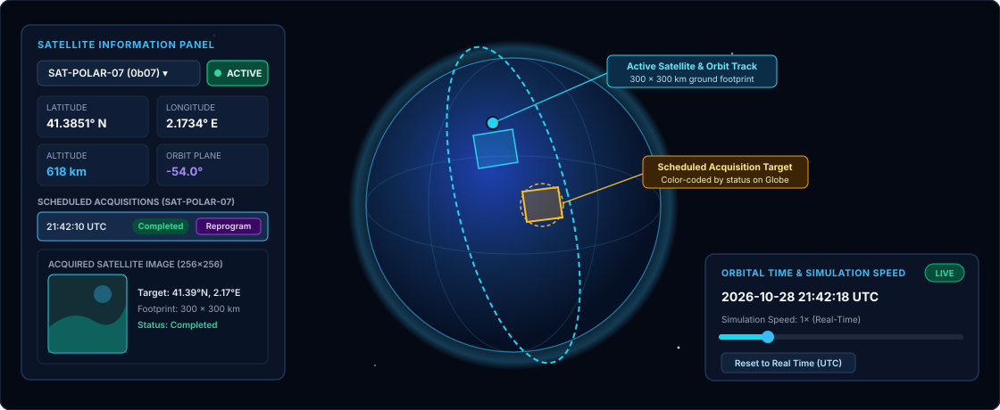
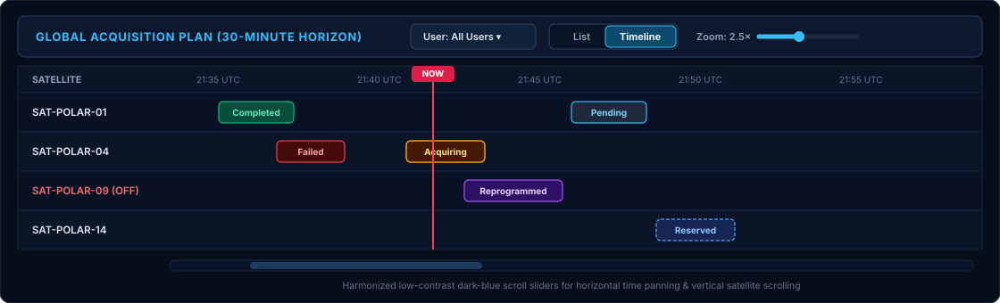
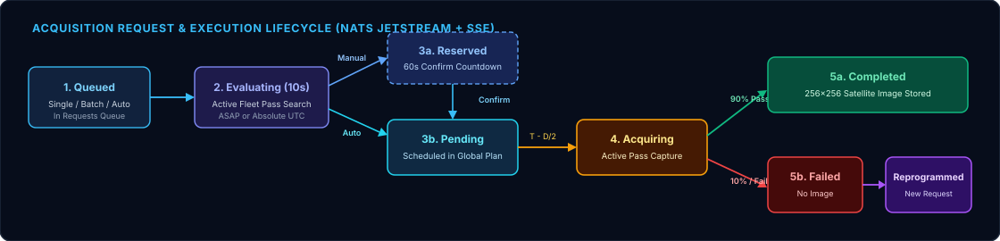
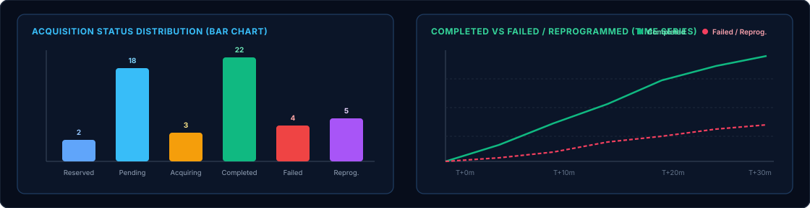

1 Overview & Polar Constellation Model
Back to top ↑
The constellation consists of 30 polar-orbiting Earth observation satellites evenly spaced every 6° of orbital plane longitude (from -90° to +84°). Each satellite completes a full polar orbit every 97 minutes and projects a 300 km × 300 km ground swath footprint onto the Earth's surface.
🌍 Real-Time 3D Propagation
Both the WebGL 3D Globe and the backend pass evaluator propagate satellite sub-points synchronously, accounting for Earth rotation (24.5° per orbit) and pole crossings. See Section 3: 3D Globe & Time Controls.
⚡ Event-Driven Execution
An event-driven backend executor transitions scheduled acquisitions from Pending to Acquiring and Completed (or Failed), streaming updates immediately to your browser.
🔄 Resilient Reprogramming
Failed acquisitions or acquisitions belonging to a disabled satellite can be reprogrammed manually or automatically onto the next earliest feasible pass. See Reprogramming Workflows.
2 Top HUD Navigation & Control Bar
Back to top ↑The top Heads-Up Display (HUD) bar provides one-click access to session initialization, image request tools, statistical charts, the global acquisition plan, and chronological target navigation.

2.1 Starting & Ending an Acquisition Plan Session (▶ Start / ■ End)
To support on-demand cloud deployments (such as Google Cloud Run scaling to zero when idle), the application starts in an idle state when you first open the page:
-
▶ StartButton (Green): Generates a fresh 30-minute Global Acquisition Plan across the 30 polar satellites, resets all satellites toACTIVE, starts the background acquisition executor, and switches the button to■ End. -
■ EndButton (Red): Immediately stops all background execution and reservation timers on the server, clears the current acquisition plan and request queue, and returns the application to idle mode.
2.2 Top Bar Controls Summary
- Fleet Pill (🛰️ Icon): Displays constellation availability and opens the Satellite Information Panel if closed.
- System Health Pill (📈 Icon): Glows emerald when the Backend REST API, PostgreSQL database, and NATS JetStream stream are online.
-
Image Requests ▾Menu: Opens the Request Image dialog, Batch Requests generator, or Requests Queue monitor (with a live badge count of pending requests). -
Stats ▾Menu: Opens the Status Distribution bar chart or the Completed vs Failed / Reprogrammed time-series chart. -
See Acquisition Plan: Toggles the floating Global Acquisition Plan window. -
‹|Next Acquisition|›: ClickingNext Acquisitionfinds the scheduled acquisition closest to the current real UTC time, selects its satellite in the Satellite Information Panel, and smoothly rotates the 3D Globe camera to center on its target footprint. Use‹and›to step backward or forward through the global plan in chronological order. -
Orbiting/Paused: Toggles gentle camera auto-rotation around the 3D Earth globe. -
?(Help Button): Opens this HTML User Manual in a new browser tab.
3 3D Globe Visualization & Time Simulation Controls
Back to top ↑The central viewport renders a hardware-accelerated 3D Earth globe with realistic day/night solar terminator shading, atmospheric glow, polar orbit trajectories, live satellite footprints, and scheduled target zones.

3.1 Interactive 3D Elements on the Globe
- Camera Navigation: Left-click + drag to rotate the globe, scroll the mouse wheel to zoom in/out, and right-click + drag to pan.
- Satellite Markers & Ground Swaths: Each satellite is rendered at its orbital altitude with a projected 300 km × 300 km ground footprint. Selecting a satellite highlights its full 360° polar orbit ring and live footprint. Disabled satellites are distinctly colored red so you can identify offline spacecraft at a glance.
- Scheduled Target Footprints & Pulsing Halo: Acquisitions belonging to the currently selected satellite are drawn on the Earth's surface and color-coded by status (Reserved, Pending, Acquiring, Completed, Failed). Note that Reprogrammed entries are intentionally hidden on the 3D globe to prevent visual overlap with their newly scheduled replacement pass.
3.2 Orbital Time & Simulation Speed Panel
Located in the bottom-right corner, the draggable Orbital Time & Simulation Speed panel lets you inspect satellite positions at any point in time:
-
LIVEvsSIMULATEDBadge: Indicates whether the 3D globe is locked to real-world UTC time or running at an accelerated simulation speed. -
Simulation Speed Slider (
1×–120×): Accelerate orbital motion up to120×to preview upcoming polar passes and solar terminator movement. -
Reset to Real Time (UTC): Immediately snaps the simulation clock and speed multiplier back to real-time UTC (1×).
4 Satellite Information Panel & Fleet Status Management
Back to top ↑Clicking any satellite on the 3D globe, clicking the top-bar Fleet pill, or clicking a satellite ID in the Global Acquisition Plan opens the draggable Satellite Information Panel on the left side of the screen.
4.1 Enabling & Disabling Satellites (Automatic Fleet Reprogramming)
Next to the satellite selector dropdown is an interactive status button showing either ACTIVE (green) or DISABLED (red). Clicking this button opens a confirmation modal that explains the operational impact before applying the change:
When you confirm disabling an active satellite, its status changes to
DISABLED and the backend automatically enqueues ASAP Reprogramming Requests (with Auto confirmation) for all of its Pending and Reserved acquisitions onto the remaining active satellites in the fleet.
When you reactivate a disabled satellite, the backend automatically evaluates all currently Pending acquisitions across the entire constellation. Any acquisition that the reactivated satellite can capture at an earlier UTC timestamp is automatically reassigned to it!
4.2 Per-Satellite Acquisitions & Captured Imagery Preview
The bottom half of the Satellite Information Panel lists all acquisitions assigned to the selected satellite:
- Inspecting a Target on the Globe: Clicking any row in the satellite's acquisition list highlights that acquisition, rotates the 3D globe to center on its target coordinates, and displays a pulsing target halo.
-
Acquired Satellite Image (
256×256): When an acquisition finishes with status Completed, the panel displays the captured256×256satellite image alongside target coordinates and metadata. -
Simulating Image Quality Failure (
FailButton): On any Completed acquisition, you can clickFailto mark the capture as unusable (e.g., due to cloud cover or sensor artifacts). This transitions the acquisition to Failed and clears its stored image so it can be reprogrammed.
5 Global Acquisition Plan (List & Timeline Views)
Back to top ↑
Clicking See Acquisition Plan in the Top HUD Bar opens the floating Global Acquisition Plan window. You can filter the plan by user (All Users, system, or demo) and switch seamlessly between List view and Timeline view.

5.1 List View & Row Actions
In List mode, acquisitions are displayed in chronological UTC order with the following interactive controls:
- Row Selection: Clicking any row selects that satellite and acquisition in the Satellite Information Panel and flies the 3D camera to the target location.
-
Confirm/Cancel(on Reserved rows): Manually confirm a reserved pass to transition it to Pending, or cancel it to release the slot. -
Fail(on Completed rows): Marks a completed capture as Failed. -
Reprogram(on Failed rows): Opens the Reprogram Image Request dialog pre-populated with the failed acquisition's target coordinates and footprint dimensions.
5.2 Interactive Gantt Timeline View
Switching to Timeline mode renders a two-dimensional Gantt chart across the 30-minute planning horizon:
- Satellite Tracks (Vertical Axis): Lists every satellite holding scheduled acquisitions (with disabled satellites clearly badged).
-
Time Horizon & Live
NOWIndicator (Horizontal Axis): Plots each acquisition block according to its UTC start/end window and status color, intersected by a live redNOWcursor. -
Horizontal Zoom Slider (
1×–8×) & Panning: Use the Zoom slider in the header to expand dense clusters of acquisitions and scroll horizontally/vertically using the low-contrast dark-blue scrollbars.
6 Requesting Satellite Imagery & Reprogramming Workflows
Back to top ↑
All new image tasking and reprogramming flows are accessed from the Image Requests ▾ menu in the Top HUD Bar or from the Reprogram button on a Failed acquisition.

6.1 Submitting an Individual Image Request (Request Image)
-
Target Location & Footprint Size: Enter Latitude (
-90°to90°) and Longitude (-180°to180°) manually, or clickPick on Globeand click directly on any point on the 3D Earth to populate the coordinates automatically. Specify the target Width (m) and Height (m). -
Time Constraint (
ASAPvsTime): ChooseASAPto let the orbital scheduler find the earliest pass across all active satellites, or chooseTimeto request a specific UTC timestamp. -
Confirmation Mode (
ManualvsAuto):-
Manual: After the 10-second orbital evaluation finishes, the pass is inserted as Reserved and a Confirmation Dialog pops up showing the assigned satellite, feasible UTC time, whether time constraints were met, and estimated cost points. You have 60 seconds to click Confirm (transitioning it to Pending) before the reservation expires automatically. -
Auto: Immediately schedules the evaluated pass as Pending without requiring manual confirmation and displays a summary toast notification.
-
6.2 Generating Batch Requests (Batch Requests)
Open Image Requests ▾ → Batch Requests to enqueue between 1 and 50 randomized land-target acquisition requests at once. All batch requests use Auto confirmation mode and are processed sequentially by the backend request queue evaluator.
6.3 Monitoring the Requests Queue (Requests Queue)
Open Image Requests ▾ → Requests Queue to watch pending requests in real time as they move from Queued to Evaluating (10-second orbital pass calculation per request) before being added to the Global Acquisition Plan.
6.4 Manual & Automatic Reprogramming
When an acquisition fails (either during the 10% simulated capture failure rate or when manually marked as Failed), clicking its Reprogram button opens the Reprogram Image Request dialog:
-
The target Latitude, Longitude, Width, and Height are locked to match the original failed acquisition, while allowing you to choose
ASAPor a new target UTC time andManualorAutoconfirmation. -
As soon as the replacement acquisition is confirmed (either automatically in
Automode or when you click Confirm inManualmode), the original failed acquisition automatically transitions from Failed to Reprogrammed and its 3D globe target marker is hidden.
7 Real-Time Analytics & Statistics (Stats ▾)
Back to top ↑
The Stats ▾ dropdown in the Top HUD Bar provides two live, draggable chart windows that update automatically whenever any acquisition changes state:

📊 Status Distribution (Vertical Bar Chart)
Displays real-time counts and proportional vertical bars for all six statuses: Reserved, Pending, Acquiring, Completed, Failed, and Reprogrammed.
📈 Completed vs Failed / Reprogrammed (Line Chart)
Plots cumulative completed acquisitions (emerald curve) against failed/reprogrammed acquisitions (rose/amber curve) across the plan timeline so operators can monitor constellation throughput and recovery rate.
8 Acquisition Status & Controls Reference
Back to top ↑Use the table below as a quick reference for all acquisition statuses, their meaning in the scheduling pipeline, and how they are represented on the 3D Globe.
| Status Badge | Lifecycle Stage & Meaning | 3D Globe Representation | Available User Actions |
|---|---|---|---|
| Reserved | Pass evaluated in Manual mode (Section 6.1); awaiting user confirmation within 60s. |
Dashed blue target footprint on Earth's surface. | Confirm (→ Pending) or Cancel (deletes slot). |
| Pending | Confirmed and scheduled in the active plan; waiting for pass window T - D/2. |
Cyan target footprint on Earth's surface. | Automatically reprogrammed if satellite is disabled (Section 4.1). |
| Acquiring | Satellite is currently over the target window (between T - D/2 and T + D/2) capturing imagery. |
Bright amber/gold active target footprint. | Automatic transition to Completed or Failed at T + D/2. |
| Completed | Capture succeeded; 256×256 satellite image stored (Section 4.2). |
Emerald green completed footprint. | View image in Satellite Panel, or click Fail to invalidate. |
| Failed | Capture failed (simulated 10% anomaly or manually marked Failed); no image stored. | Red failed target footprint. | Click Reprogram (Section 6.4) to task a replacement pass. |
| Reprogrammed | Original failed or disabled-satellite acquisition that has been superseded by a confirmed replacement pass. | Hidden on 3D Globe to prevent clutter over the replacement pass. | Tracked in Global Plan & Stats for audit history. |